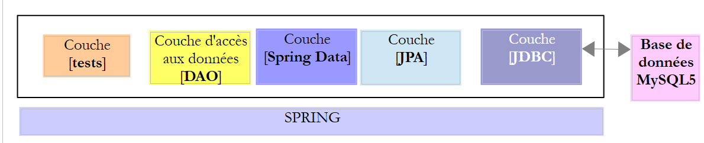
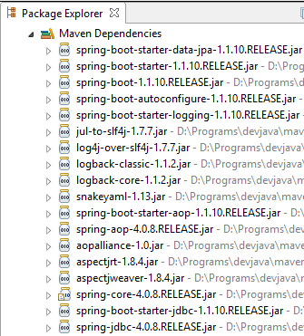

5. Introduction to Spring Data JPA
In this chapter, we will examine the following architecture:
 |
We insert a [JPA] layer (Java Persistence API) between the [DAO] layer and the JDBC driver of the SGBD. It is now the JPA layer that issues the SQL commands intended for the SGBD. The [DAO] layer no longer handles SQL commands but only objects called JPA entities, which are representations of the various tables in the database being used. The fields of these entities are uniquely associated with table columns via Java annotations. This is what allows the JPA layer to translate into SQL the operations of the [DAO] layer performed on the JPA entities.
Spring Data is a branch of Spring focused on data access, whether the data is stored in a SGBDR relational database, a NOSQL database, or other types of repositories. Here, we are concerned only with SGBDR and their access via JPA. Subsequently, we may write [Spring JPA] to actually refer to [Spring Data JPA]. In the architecture above, the [Spring Data] layer provides functionality to the [DAO] layer for managing JPA entities.
JPA is actually a specification. We will test three of its implementations:
- Hibernate (http://hibernate.org/);
- EclipseLink (http://www.eclipse.org/eclipselink/);
- OpenJpa (http://openjpa.apache.org/);
5.1. Example-01
The Spring website offers numerous tutorials to get started with Spring [http://spring.io/guides]. We will use one of them to introduce Spring Data. For this, we use Spring Tool Suite (STS).
 |
- In [1], we import one of the tutorials from [spring.io/guides];
 |
- In [2], we select the tutorial [Accessing Data Jpa], which demonstrates how to access a database using Spring Data;
- In [3], we select a project configured by Maven;
- In [4], the tutorial is available in two forms: [initial], which is an empty version that you fill in by following the tutorial, or [complete], which is the final version of the tutorial. We choose the latter;
- In [5], you can choose to view the tutorial in a browser;
- in [6], the final project.
5.1.1. The project’s Maven configuration
The project’s Maven dependencies are configured in the [pom.xml] file:
<groupId>org.springframework</groupId>
<artifactId>gs-accessing-data-jpa</artifactId>
<version>0.1.0</version>
<parent>
<groupId>org.springframework.boot</groupId>
<artifactId>spring-boot-starter-parent</artifactId>
<version>1.2.3.RELEASE</version>
</parent>
<dependencies>
<dependency>
<groupId>org.springframework.boot</groupId>
<artifactId>spring-boot-starter-data-jpa</artifactId>
</dependency>
<dependency>
<groupId>com.h2database</groupId>
<artifactId>h2</artifactId>
</dependency>
</dependencies>
<properties>
<!-- use UTF-8 for everything -->
<project.build.sourceEncoding>UTF-8</project.build.sourceEncoding>
<project.reporting.outputEncoding>UTF-8</project.reporting.outputEncoding>
<start-class>hello.Application</start-class>
</properties>
- lines 5–9: define a parent Maven project. This project defines most of the project’s dependencies. They may be sufficient, in which case no additional dependencies are added, or they may not be, in which case the missing dependencies are added;
- lines 12–15: define a dependency on [spring-boot-starter-data-jpa]. This artifact contains the Spring Data classes;
- Lines 16–19: define a dependency on the SGBD H2 artifact, which allows for the creation and management of in-memory databases.
Let’s look at the classes provided by these dependencies:
 |  |  |
There are a great many of them:
- some belong to the Spring ecosystem (those starting with "spring");
- others belong to the Hibernate ecosystem (hibernate, jboss), of which we use the implementation JPA here;
- others are testing libraries (junit, hamcrest);
- others are logging libraries (log4j, logback, slf4j);
We will keep them all. For a production application, only those that are necessary should be kept.
On line 26 of the [pom.xml] file, we find the line:
<start-class>hello.Application</start-class>
This line is linked to the following lines:
<build>
<plugins>
<plugin>
<artifactId>maven-compiler-plugin</artifactId>
</plugin>
<plugin>
<groupId>org.springframework.boot</groupId>
<artifactId>spring-boot-maven-plugin</artifactId>
</plugin>
</plugins>
</build>
Lines 6–9: The [spring-boot-maven-plugin] plugin is used to generate the application’s executable file, jar. Line 26 of the [pom.xml] file then specifies the executable class for this jar.
5.1.2. The [JPA] layer
Database access is handled through a [JPA] layer, Java Persistence API:
 |
 |
The application is basic and handles clients and [Customer]. The [Customer] class is part of the [JPA] layer and is as follows:
package hello;
import javax.persistence.Entity;
import javax.persistence.GeneratedValue;
import javax.persistence.GenerationType;
import javax.persistence.Id;
@Entity
public class Customer {
@Id
@GeneratedValue(strategy = GenerationType.AUTO)
private long id;
private String firstName;
private String lastName;
protected Customer() {
}
public Customer(String firstName, String lastName) {
this.firstName = firstName;
this.lastName = lastName;
}
@Override
public String toString() {
return String.format("Customer[id=%d, firstName='%s', lastName='%s']", id, firstName, lastName);
}
}
A customer has an ID [id], a first name [firstName], and a last name [lastName]. Each instance [Customer] represents a row in a database table.
- Line 8: annotation JPA, which ensures that the persistence of instances [Customer] (Create, Read, Update, Delete) will be managed by an implementation JPA. Based on the Maven dependencies, we can see that the JPA / Hibernate implementation is being used;
- Lines 11–12: JPA annotations that associate the [id] field with the primary key of the [Customer] table. Line 12 indicates that the JPA implementation will use the primary key generation method specific to the SGBD being used, in this case H2;
There are no other annotations for JPA. Default values will therefore be used:
- the [Customer] table will bear the name of the class, i.e., [Customer];
- the columns of this table will bear the names of the class fields: [id, firstName, lastName], noting that case is not taken into account in the name of a table column;
Note that the JPA implementation used is never named.
5.1.3. The [Spring Data] layer
The class [CustomerRepository] implements the table access layer [Customer]. Its code is as follows:
 |
 |
package hello;
import java.util.List;
import org.springframework.data.repository.CrudRepository;
public interface CustomerRepository extends CrudRepository<Customer, Long> {
List<Customer> findByLastName(String lastName);
}
This is therefore an interface and not a class (line 7). It extends the [CrudRepository] interface, a Spring interface (line 5). This interface is parameterized by two types: the first is the type of the managed elements, here the type [Customer]; the second is the type of the primary key of the managed elements, here a type [Long]. The [CrudRepository] interface is as follows:
package org.springframework.data.repository;
import java.io.Serializable;
@NoRepositoryBean
public interface CrudRepository<T, ID extends Serializable> extends Repository<T, ID> {
<S extends T> S save(S entity);
<S extends T> Iterable<S> save(Iterable<S> entities);
T findOne(ID id);
boolean exists(ID id);
Iterable<T> findAll();
Iterable<T> findAll(Iterable<ID> ids);
long count();
void delete(ID id);
void delete(T entity);
void delete(Iterable<? extends T> entities);
void deleteAll();
}
This interface defines the CRUD operations (Create – Read – Update – Delete) that can be performed on a type JPA T:
- line 8: the save method allows an entity T to be persisted in the database. It persists the entity using the primary key assigned to it by SGBD. It also allows an entity T identified by its primary key id to be updated. The choice between these two actions depends on the value of the primary key id: if it is null, the persistence operation occurs; otherwise, the update operation occurs;
- line 10: same as above, but for a list of entities;
- line 12: the method findOne retrieves an entity T identified by its primary key id;
- line 22: the delete method allows you to delete an entity T identified by its primary key id;
- lines 24–28: variants of the [delete] method;
- line 16: the [findAll] method retrieves all persisted T entities;
- line 18: same as above, but limited to entities for which a list of identifiers has been provided;
Let’s return to the [CustomerRepository] interface:
package hello;
import java.util.List;
import org.springframework.data.repository.CrudRepository;
public interface CustomerRepository extends CrudRepository<Customer, Long> {
List<Customer> findByLastName(String lastName);
}
- Line 9 allows you to retrieve a [Customer] by its name [lastName];
And that’s all for the [DAO] layer. There is no implementation class for the previous interface. It is generated at runtime by [Spring Data]. The methods of the [CrudRepository] interface are automatically implemented. For the methods added to the [CustomerRepository] interface, it depends. Let’s go back to the definition of [Customer]:
private long id;
private String firstName;
private String lastName;
The method on line 9 is automatically implemented by [Spring Data] because it references the [lastName] field (line 3) of [Customer]. When it encounters a [findBySomething] method in the interface to be implemented, Spring Data implements it using the following JPQL (Java Persistence Query Language) query:
Therefore, the type T must have a field named [something]. Thus, the method
will be implemented by code similar to the following:
return [em].createQuery("select c from Customer c where c.lastName=:value").setParameter("value",lastName).getResultList()
where [em] refers to the persistence context JPA. This is only possible if the class [Customer] has a field named [lastName], which is the case.
In conclusion, in simple cases, Spring Data allows us to implement the [DAO] layer with a simple interface.
5.1.4. The [console] layer
 |
 |
The [Application] class is as follows:
package hello;
import org.springframework.beans.factory.annotation.Autowired;
import org.springframework.boot.CommandLineRunner;
import org.springframework.boot.SpringApplication;
import org.springframework.boot.autoconfigure.SpringBootApplication;
@SpringBootApplication
public class Application implements CommandLineRunner {
@Autowired
CustomerRepository repository;
public static void main(String[] args) {
SpringApplication.run(Application.class);
}
@Override
public void run(String... strings) throws Exception {
// save a couple of customers
repository.save(new Customer("Jack", "Bauer"));
repository.save(new Customer("Chloe", "O'Brian"));
repository.save(new Customer("Kim", "Bauer"));
repository.save(new Customer("David", "Palmer"));
repository.save(new Customer("Michelle", "Dessler"));
// fetch all customers
System.out.println("Customers found with findAll():");
System.out.println("-------------------------------");
for (Customer customer : repository.findAll()) {
System.out.println(customer);
}
System.out.println();
// fetch an individual customer by ID
Customer customer = repository.findOne(1L);
System.out.println("Customer found with findOne(1L):");
System.out.println("--------------------------------");
System.out.println(customer);
System.out.println();
// fetch customers by last name
System.out.println("Customer found with findByLastName('Bauer'):");
System.out.println("--------------------------------------------");
for (Customer bauer : repository.findByLastName("Bauer")) {
System.out.println(bauer);
}
}
}
- line 9: the class implements the [CommandLineRunner] interface, which is a [Spring Boot] interface (line 4). This interface has only one method, the one on line 19;
- line 8: @SpringBootApplication is an annotation that groups several [Spring Boot] annotations:
- @Configuration: indicates that the class is a configuration class;
- @EnableAutoConfiguration: instructs [Spring Boot] to create a certain number of beans itself based on various properties, particularly the contents of the project’s Classpath. Because the Hibernate libraries are in the Classpath, the [entityManagerFactory] bean will be implemented with Hibernate. Because the H2 library is in the Classpath, the [dataSource] bean will be implemented with H2. In the [dataSource] bean, you must also define the user and password. Here, Spring Boot will use the default H2 administrator, which has no password. Because the [spring-tx] library is in the classpath, Spring’s transaction manager will be used;
- @EnableWebMvc: if the [spring-mvc] library is in the classpath. In this case, auto-configuration is performed for the web application;
- @ComponentScan: which tells Spring where to look for other beans, configurations, and services. Here, they are searched for by default in the package containing the tagged class, i.e., the [hello] package. Thus, the classes [Customer] and [CustomerRepository] will be found. Because the first has the [@Entity] annotation, it will be cataloged as an entity to be managed by Hibernate. Because the second extends the [CrudRepository] interface, it will be registered as a Spring bean;
- lines 11–12: the [CustomerRepository] bean is injected into the main class code;
- line 15: the static method [run] of the [SpringApplication] class in the Spring Boot project is executed. Its parameter is the class that has a [Configuration] or [EnableAutoConfiguration] annotation. Everything explained previously will then take place. The result is a Spring application context, i.e., a set of beans managed by Spring;
- lines 19–48: the following operations simply use the methods of the bean implementing the [CustomerRepository] interface;
The console output is as follows:
- lines 1-8: the Spring Boot project logo;
- line 9: the [hello.Application] class is executed;
- line 10: [AnnotationConfigApplicationContext] is a class implementing Spring’s [ApplicationContext] interface. It is a bean container;
- line 11: the [entityManagerFactory] bean is implemented using the [LocalContainerEntityManagerFactory] class, a Spring class. It manages the [JPA] layer;
- line 12: [Hibernate] appears. It is this JPA implementation that was chosen;
- line 19: a Hibernate dialect is the variant SQL to be used with SGBD. Here, the [H2Dialect] dialect indicates that Hibernate will work with the SGBD H2;
- Lines 21–22: The database is created. The table [CUSTOMER] is created. This means that Hibernate has been configured to generate tables from the JPA definitions; here, the JPA definition of the [Customer] class;
- lines 26–30: result of the [findAll] method of the interface;
- line 34: result of the [findOne] method of the interface;
- lines 38-39: results of the [findByLastName] method;
- lines 41 and following: logs of the Spring context closure.
5.1.5. Manual configuration of the Spring project Data
We duplicate the previous project into the [gs-accessing-data-jpa-02] project:
 |
In this new project, we will not rely on the automatic configuration provided by Spring Boot. We will configure it manually. This can be useful if the default configurations do not suit our needs.
First, we will specify the necessary dependencies in the [pom.xml] file:
<?xml version="1.0" encoding="UTF-8"?>
<project xmlns="http://maven.apache.org/POM/4.0.0" xsi:schemaLocation="http://maven.apache.org/POM/4.0.0 http://maven.apache.org/maven-v4_0_0.xsd"
xmlns:xsi="http://www.w3.org/2001/XMLSchema-instance">
<modelVersion>4.0.0</modelVersion>
<groupId>org.springframework</groupId>
<artifactId>gs-accessing-data-jpa-02</artifactId>
<version>0.1.0</version>
<parent>
<groupId>org.springframework.boot</groupId>
<artifactId>spring-boot-starter-parent</artifactId>
<version>1.2.3.RELEASE</version>
</parent>
<dependencies>
<!-- Spring Data -->
<dependency>
<groupId>org.springframework.data</groupId>
<artifactId>spring-data-jpa</artifactId>
</dependency>
<!-- Hibernate -->
<dependency>
<groupId>org.hibernate</groupId>
<artifactId>hibernate-entitymanager</artifactId>
</dependency>
<!-- H2 Database -->
<dependency>
<groupId>com.h2database</groupId>
<artifactId>h2</artifactId>
</dependency>
<!-- Tomcat JDBC -->
<dependency>
<groupId>org.apache.tomcat</groupId>
<artifactId>tomcat-jdbc</artifactId>
</dependency>
</dependencies>
<properties>
<!-- use UTF-8 for everything -->
<project.build.sourceEncoding>UTF-8</project.build.sourceEncoding>
<project.reporting.outputEncoding>UTF-8</project.reporting.outputEncoding>
</properties>
<build>
<plugins>
<plugin>
<groupId>org.springframework.boot</groupId>
<artifactId>spring-boot-maven-plugin</artifactId>
</plugin>
</plugins>
</build>
<repositories>
<repository>
<id>spring-releases</id>
<name>Spring Releases</name>
<url>https://repo.spring.io/libs-release</url>
</repository>
<repository>
<id>org.jboss.repository.releases</id>
<name>JBoss Maven Release Repository</name>
<url>https://repository.jboss.org/nexus/content/repositories/releases</url>
</repository>
</repositories>
<pluginRepositories>
<pluginRepository>
<id>spring-releases</id>
<name>Spring Releases</name>
<url>https://repo.spring.io/libs-release</url>
</pluginRepository>
</pluginRepositories>
</project>
- lines 10–14: the parent Maven project whose libraries we will use;
- lines 18-21: Spring Data used to access the database;
- lines 23–26: the Hibernate implementation of the JPA specification;
- lines 28–31: the SGBD H2;
- lines 33–36: Databases are often used with open connection pools that avoid repeated connection openings and closings. Here, the implementation used is [tomcat-jdbc];
In the new project, the [Customer] entity and the [CustomerRepository] interface remain unchanged. We will modify the [Application] class, which will be split into two classes:
- [Config], which will be the configuration class:
- [Main], which will be the executable class;
 |
The executable class [Application] is now as follows:
package console;
import org.springframework.context.annotation.AnnotationConfigApplicationContext;
import repositories.CustomerRepository;
import config.AppConfig;
import entities.Customer;
public class Application {
public static void main(String[] args) {
// instantiation Spring context
AnnotationConfigApplicationContext context = new AnnotationConfigApplicationContext(AppConfig.class);
CustomerRepository repository = context.getBean(CustomerRepository.class);
// save a couple of customers
repository.save(new Customer("Jack", "Bauer"));
repository.save(new Customer("Chloe", "O'Brian"));
repository.save(new Customer("Kim", "Bauer"));
repository.save(new Customer("David", "Palmer"));
repository.save(new Customer("Michelle", "Dessler"));
...
// closing context
context.close();
}
}
- line 9: the [Application] class no longer has any configuration annotations;
- lines 3–7: note that there are no longer any imports of the [Spring Boot] package;
- line 12: Spring beans are instantiated. We obtain the Spring context containing the references to the beans thus created;
- line 13: we request a reference to the bean of type [CustomerRepository];
The [Config] class that configures the project is as follows:
package config;
import javax.persistence.EntityManagerFactory;
import org.apache.tomcat.jdbc.pool.DataSource;
import org.springframework.context.annotation.Bean;
import org.springframework.context.annotation.Configuration;
import org.springframework.data.jpa.repository.config.EnableJpaRepositories;
import org.springframework.orm.jpa.JpaTransactionManager;
import org.springframework.orm.jpa.JpaVendorAdapter;
import org.springframework.orm.jpa.LocalContainerEntityManagerFactoryBean;
import org.springframework.orm.jpa.vendor.Database;
import org.springframework.orm.jpa.vendor.HibernateJpaVendorAdapter;
import org.springframework.transaction.PlatformTransactionManager;
import org.springframework.transaction.annotation.EnableTransactionManagement;
@EnableTransactionManagement
@EnableJpaRepositories(basePackages = { "repositories" })
@Configuration
// @ComponentScan(basePackages={"package1","package2"})
public class AppConfig {
// h2 database
@Bean
public DataSource dataSource() {
// data source TomcatJdbc
DataSource dataSource = new DataSource();
// configuration access JDBC
dataSource.setDriverClassName("org.h2.Driver");
dataSource.setUrl("jdbc:h2:./demo");
dataSource.setUsername("sa");
dataSource.setPassword("");
// an initially open connection
dataSource.setInitialSize(1);
// result
return dataSource;
}
// the provider JPA
@Bean
public JpaVendorAdapter jpaVendorAdapter() {
HibernateJpaVendorAdapter hibernateJpaVendorAdapter = new HibernateJpaVendorAdapter();
hibernateJpaVendorAdapter.setShowSql(false);
hibernateJpaVendorAdapter.setGenerateDdl(true);
hibernateJpaVendorAdapter.setDatabase(Database.H2);
return hibernateJpaVendorAdapter;
}
// EntityManagerFactory
@Bean
public EntityManagerFactory entityManagerFactory(JpaVendorAdapter jpaVendorAdapter, DataSource dataSource) {
LocalContainerEntityManagerFactoryBean factory = new LocalContainerEntityManagerFactoryBean();
factory.setJpaVendorAdapter(jpaVendorAdapter);
factory.setPackagesToScan("entities");
factory.setDataSource(dataSource);
factory.afterPropertiesSet();
return factory.getObject();
}
// Transaction manager
@Bean
public PlatformTransactionManager transactionManager(EntityManagerFactory entityManagerFactory) {
JpaTransactionManager txManager = new JpaTransactionManager();
txManager.setEntityManagerFactory(entityManagerFactory);
return txManager;
}
}
- line 17: the [@EnableTransactionManagement] annotation indicates that the [@Transactional] annotations must be interpreted. The methods of the [CrudRepository] interfaces have these annotations. They therefore execute within a transaction;
- line 18: the [@EnableJpaRepositories] annotation specifies the directories where the Spring interfaces Data and [CrudRepository] are located. These interfaces will become Spring components and be available in its context;
- line 19: the [@Configuration] annotation makes the [Config] class a Spring configuration class;
- line 20: the [@ComponentScan] annotation specifies the directories where Spring components should be searched for. Spring components are classes tagged with Spring annotations such as @Service, @Component, @Controller, etc. Here, there are no others besides those defined within the [AppConfig] class, so the annotation has been commented out;
- Lines 24–37: define the data source, the H2 database. It is the @Bean annotation on line 25 that makes the object created by this method a Spring-managed component. The method name can be anything here. However, it must be named [dataSource] if EntityManagerFactory on line 51 is absent and defined via autoconfiguration;
- line 30: the database will be named [demo] and will be generated in the project folder;
- lines 40–47: define the JPA implementation used, in this case a Hibernate implementation. The method name can be anything here;
- line 43: no logs for SQL;
- line 44: the database will be created if it does not exist;
- lines 50–58: define the EntityManagerFactory that will manage the persistence of JPA. The method must be named [entityManagerFactory];
- line 51: the method receives two parameters of the types of the two beans defined previously. These will then be constructed and injected by Spring as method parameters;
- line 53: sets the JPA implementation to be used;
- line 54: specifies the directories where the JPA entities can be found;
- line 55: sets the data source to be managed;
- lines 61–66: the transaction manager. The method must be named [transactionManager]. It receives the bean from lines 51–58 as a parameter;
- line 64: the transaction manager is associated with EntityManagerFactory;
The preceding methods can be defined in any order.
Running the project yields the same results. A new file appears in the project folder, the H2 database file:
 |
5.1.6. Creating an executable archive
To create an executable archive of the project, proceed as follows:
 |
- in [1]: create an execution configuration;
- in [2]: of type [Java Application]
- In [3]: specify the project to be executed (use the Browse button);
- in [4]: specify the class to execute;
- in [5]: the name of the run configuration – can be anything;
 |
- in [6]: the project is exported;
- in [7]: as an executable archive JAR;
- in [8]: specifies the path and name of the executable file to be created;
- in [9]: the name of the runtime configuration created in [5];
10  |
- in [10], the archive created;
Once this is done, open a console in the folder containing the executable archive:
The archive is executed as follows:
.....\dist>java -jar gs-accessing-data-jpa-02.jar
The results displayed in the console are as follows:
SLF4J: Failed to load class "org.slf4j.impl.StaticLoggerBinder".
SLF4J: Defaulting to no-operation (NOP) logger implementation
SLF4J: See http://www.slf4j.org/codes.html#StaticLoggerBinder for further details.
mars 10, 2015 5:27:20 PM org.hibernate.jpa.internal.util.LogHelper logPersistenceUnitInformation
INFO: HHH000204: Processing PersistenceUnitInfo [
name: default
...]
mars 10, 2015 5:27:20 PM org.hibernate.Version logVersion
INFO: HHH000412: Hibernate Core {4.3.8.Final}
mars 10, 2015 5:27:20 PM org.hibernate.cfg.Environment <clinit>
INFO: HHH000206: hibernate.properties not found
mars 10, 2015 5:27:20 PM org.hibernate.cfg.Environment buildBytecodeProvider
INFO: HHH000021: Bytecode provider name : javassist
mars 10, 2015 5:27:22 PM org.hibernate.annotations.common.reflection.java.JavaReflectionManager <clinit>
INFO: HCANN000001: Hibernate Commons Annotations {4.0.5.Final}
mars 10, 2015 5:27:22 PM org.hibernate.dialect.Dialect <init>
INFO: HHH000400: Using dialect: org.hibernate.dialect.H2Dialect
mars 10, 2015 5:27:22 PM org.hibernate.hql.internal.ast.ASTQueryTranslatorFactory <init>
INFO: HHH000397: Using ASTQueryTranslatorFactory
mars 10, 2015 5:27:22 PM org.hibernate.tool.hbm2ddl.SchemaUpdate execute
INFO: HHH000228: Running hbm2ddl schema update
mars 10, 2015 5:27:22 PM org.hibernate.tool.hbm2ddl.SchemaUpdate execute
INFO: HHH000102: Fetching database metadata
mars 10, 2015 5:27:22 PM org.hibernate.tool.hbm2ddl.SchemaUpdate execute
INFO: HHH000396: Updating schema
mars 10, 2015 5:27:22 PM org.hibernate.tool.hbm2ddl.DatabaseMetadata getTableMetadata
INFO: HHH000262: Table not found: Customer
mars 10, 2015 5:27:22 PM org.hibernate.tool.hbm2ddl.DatabaseMetadata getTableMetadata
INFO: HHH000262: Table not found: Customer
mars 10, 2015 5:27:22 PM org.hibernate.tool.hbm2ddl.DatabaseMetadata getTableMetadata
INFO: HHH000262: Table not found: Customer
mars 10, 2015 5:27:22 PM org.hibernate.tool.hbm2ddl.SchemaUpdate execute
INFO: HHH000232: Schema update complete
Customers found with findAll():
-------------------------------
Customer[id=1, firstName='Jack', lastName='Bauer']
Customer[id=2, firstName='Chloe', lastName='O'Brian']
Customer[id=3, firstName='Kim', lastName='Bauer']
Customer[id=4, firstName='David', lastName='Palmer']
Customer[id=5, firstName='Michelle', lastName='Dessler']
Customer found with findOne(1L):
--------------------------------
Customer[id=1, firstName='Jack', lastName='Bauer']
Customer found with findByLastName('Bauer'):
--------------------------------------------
Customer[id=1, firstName='Jack', lastName='Bauer']
Customer[id=3, firstName='Kim', lastName='Bauer']
5.1.7. Creating a [Spring Data] project
To create a Spring project template Data, proceed as follows:
 |
- In [1], create a new project;
- In [2]: of type [Spring Starter Project];
- The generated project will be a Maven project. In [3], specify the project group name;
- in [4]: specify the name of the artifact (a jar here) that will be created when the project is built;
- in [5]: the Eclipse name of the project – can be anything (does not have to be identical to [4]);
- in [7]: this specifies that a project will be created with a layer named [JPA], containing SGBD and MySQL. The dependencies required for such a project will then be included in the file [pom.xml];
 |
- in [8], enter the name of the project folder;
- in [9], finish the wizard;
 |
- in [10]: the created project;
The [pom.xml] file includes the dependencies required for a JPA project:
<?xml version="1.0" encoding="UTF-8"?>
<project xmlns="http://maven.apache.org/POM/4.0.0" xmlns:xsi="http://www.w3.org/2001/XMLSchema-instance"
xsi:schemaLocation="http://maven.apache.org/POM/4.0.0 http://maven.apache.org/xsd/maven-4.0.0.xsd">
<modelVersion>4.0.0</modelVersion>
<groupId>istia.st.springdata</groupId>
<artifactId>intro-spring-data-01</artifactId>
<version>0.0.1-SNAPSHOT</version>
<packaging>jar</packaging>
<name>intro-spring-data-01</name>
<description>démo spring data avec table de produits</description>
<parent>
<groupId>org.springframework.boot</groupId>
<artifactId>spring-boot-starter-parent</artifactId>
<version>1.2.3.RELEASE</version>
<relativePath/> <!-- lookup parent from repository -->
</parent>
<properties>
<project.build.sourceEncoding>UTF-8</project.build.sourceEncoding>
<start-class>demo.IntroSpringData01Application</start-class>
<java.version>1.7</java.version>
</properties>
<dependencies>
<dependency>
<groupId>org.springframework.boot</groupId>
<artifactId>spring-boot-starter-data-jpa</artifactId>
</dependency>
<dependency>
<groupId>mysql</groupId>
<artifactId>mysql-connector-java</artifactId>
<scope>runtime</scope>
</dependency>
<dependency>
<groupId>org.springframework.boot</groupId>
<artifactId>spring-boot-starter-test</artifactId>
<scope>test</scope>
</dependency>
</dependencies>
<build>
<plugins>
<plugin>
<groupId>org.springframework.boot</groupId>
<artifactId>spring-boot-maven-plugin</artifactId>
</plugin>
</plugins>
</build>
</project>
- lines 14–19: the parent Maven project;
- lines 28–31: the dependency required for JPA – will include [Spring Data];
- lines 32–36: the dependency on the JDBC driver from MySQL;
- lines 37-41: the dependencies required for the JUnit tests integrated with Spring;
The executable class [Application] does nothing but is preconfigured:
package demo;
import org.springframework.boot.SpringApplication;
import org.springframework.boot.autoconfigure.SpringBootApplication;
@SpringBootApplication
public class IntroSpringData01Application {
public static void main(String[] args) {
SpringApplication.run(IntroSpringData01Application.class, args);
}
}
- The annotation [@SpringBootApplication] makes the class a project auto-configuration class;
The test class [ApplicationTests] does nothing but is pre-configured:
package demo;
import org.junit.Test;
import org.junit.runner.RunWith;
import org.springframework.boot.test.SpringApplicationConfiguration;
import org.springframework.test.context.junit4.SpringJUnit4ClassRunner;
@RunWith(SpringJUnit4ClassRunner.class)
@SpringApplicationConfiguration(classes = IntroSpringData01Application.class)
public class IntroSpringData01ApplicationTests {
@Test
public void contextLoads() {
}
}
- line 9: the [@SpringApplicationConfiguration] annotation allows the [IntroSpringData01Application] configuration file to be used. The test class will thus benefit from all the beans defined by this file;
- line 8: the [@RunWith] annotation enables the integration of Spring with JUnit: the class will be able to be executed as a JUnit test. [@RunWith] is a JUnit annotation (line 4), while the [SpringJUnit4ClassRunner] class is a Spring class (line 6);
Now that we have a JPA application skeleton, we can complete it.